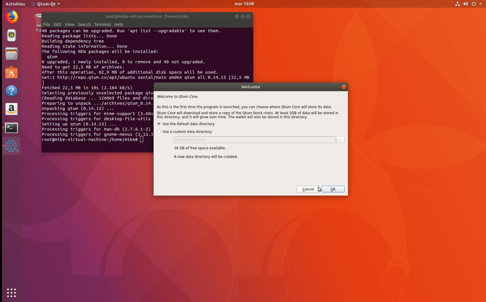

Como utilizar los repositorios oficiales de QTUM para Ubuntu 16.04-18.10, Debian y Archlinux.
Hemos publicado nuestro repositorio oficial de Qtum en https://repo.qtum.info este repositorio soporta las siguientes distribuciones:
Debian
- 8.x (Jessie)
- 9.x (stretch)
- Testing (Buster)
- Unstable (Sid)
Ubuntu
16.04 - 18.10
Mint
18.x
Archlinux
Enfoque de este documento
Este tutorial asume que ud tiene un conocimiento basico de Linux y manejo de terminal, todo el proceso utiliza el terminal de Linux.
Instalando en Ubuntu
Descargar la llave publica
Primero, debemos descargar la llave publica de Qtum del servidor de llaves de Ubuntu:
sudo apt-key adv --keyserver keyserver.ubuntu.com --recv-keys BF5B197D
Esto descargara y agregara la llave de Qtum a tu Linux.
Agregar el repositorio de Qtum a tu lista APT
sudo su - Obten permisos de administrador
echo "deb https://repo.qtum.info/apt/ubuntu/ xenial main" >> /etc/apt/sources.list.d/qtum.list
Esto agregara el repositorio a tu lista de APT. NOTA: Por favor recuerda cambiar "xenial" por el nombre codigo de Ubuntu.
Actualizando las fuentes APT e instalar Qtum
sudo apt update && sudo apt install qtum
Al hacer esto, actualizaremos las fuentes e instalaremos Qtum en nuestro Ubuntu.
Instalar en Debian
Descargar la llave publica de Qtum en Debian es un poco diferente pero no complicado.
wget -qO - https://repo.qtum.info/apt/public.key | sudo apt-key add -
Esto descarga e instala la llave publica de Qtum
Agregar el repositorio de Qtum a tu lista APT
sudo su - Obten permisos de administrador
echo "deb https://repo.qtum.info/apt/debian/ stretch main" >> /etc/apt/sources.list
Esto agregara el repositorio a tu lista de APT. NOTA: Por favor recuerda cambiar "stretch" por el nombre codigo de Debian.
Actualizando las fuentes APT e instalar Qtum
sudo apt update && sudo apt install qtum
Al hacer esto, actualizaremos nuestras fuentes e instalaremos Qtum en nuestro Debian.
Iniciando Qtum
Iniciar Qtum es sencillo, simplemente vamos a nuestro menu de aplicaciones y buscamos a Qtum


Ya podemos abrir nuestra billetera y comenzar a sincronizar!